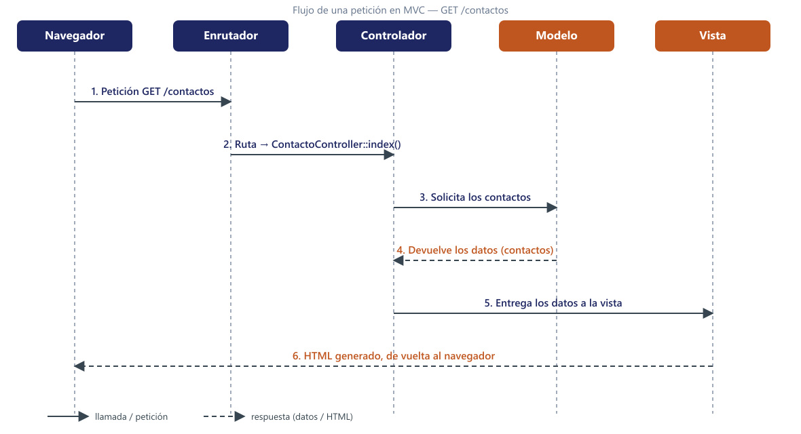

Separación de capas y patrón MVC
Este bloque trabaja CE5.a (ventajas de separar lógica y presentación) y CE5.b (mecanismos y frameworks que permiten la separación).
El problema: código espagueti
Así hemos programado hasta ahora. Todo en el mismo fichero:
<?php // producto.php — TODO mezclado (estilo UD2–UD4)
session_start();
$descuento = ($_SESSION['perfil'] ?? '') === 'socio' ? 0.9 : 1.0; // lógica
$precioFinal = 25.50 * $descuento;
?>
<html><body>
<h1>Camiseta DAW</h1> <!-- presentación -->
<p>Precio: <?= number_format($precioFinal, 2) ?> €</p>
</body></html>Salida en el navegador (visitante sin perfil de socio):
Ahora imagina que la tienda crece a 40 páginas y llegan tres peticiones de cambio:
- “Cambiad el diseño entero” → hay que editar 40 ficheros que contienen lógica crítica. Un
<div>mal cerrado puede romper un cálculo. - “El descuento de socio pasa del 10% al 15%” → el
0.9está copiado enproducto.php,carrito.phpyfactura.php. ¿Seguro que los encuentras todos? - “Queremos una app móvil que use los mismos precios” → imposible: el cálculo está soldado al HTML.
La solución: capas
Separamos la aplicación en tres responsabilidades:
| Capa | Responde a… | Ejemplo |
|---|---|---|
| Presentación | ¿Cómo se muestra? | El HTML del catálogo |
| Lógica de negocio | ¿Qué reglas aplican? | “Un socio tiene un 10% de descuento” |
| Datos | ¿Dónde se guarda? | La tabla productos, la sesión |
El mismo ejemplo, ya separado (todavía sin framework, PHP puro):
La salida es idéntica, pero ahora:
- El 15% de descuento se cambia en una línea de
Precios.php. - La app móvil puede llamar a
Precios::conDescuento()sin tocar HTML. Preciosse puede probar sin navegador:Precios::conDescuento(100, 'socio')debe devolver90.0. Siempre.
Separar capas no es estética: es lo que hace el software mantenible (cada cambio toca una capa), reutilizable (una regla sirve a todas las vistas), testeable (la lógica se prueba sin navegador) y apto para trabajar en equipo (maquetación y programación en paralelo).
El patrón Modelo-Vista-Controlador
MVC organiza esa separación en tres piezas con nombre propio:
- Modelo: los datos y sus reglas. Sabe qué es un contacto y qué operaciones son válidas.
- Vista: genera el HTML a partir de los datos que recibe. No decide nada.
- Controlador: recibe la petición, pide datos al modelo y elige qué vista devolver.
El flujo de toda petición es siempre el mismo. Para GET /contactos:
- El navegador pide
GET /contactos. - El enrutador decide qué controlador la atiende.
- El controlador pide los contactos al modelo.
- El modelo devuelve los datos.
- El controlador se los entrega a la vista.
- La vista genera el HTML, que vuelve al navegador.

Visto con código orientativo (en el próximo bloque será Laravel real):
// 2. Enrutador: /contactos → ContactoController::index()
// 3–5. Controlador
class ContactoController
{
public function index()
{
$contactos = Contacto::todos(); // 3–4: pide al modelo
return vista('contactos', $contactos); // 5: entrega a la vista
}
}
// 6. Vista: recorre $contactos y pinta <li> por cada uno¿Y quién impone esta disciplina? Los frameworks
Podrías montar MVC a mano, pero un framework te lo da hecho y con las decisiones difíciles ya tomadas: enrutado, plantillas, validación, sesiones. En PHP los más relevantes son:
| Framework | Perfil |
|---|---|
| Laravel | Convención sobre configuración, ecosistema enorme (Blade, Eloquent, artisan), documentación excelente. El que usaremos. |
| Symfony | Componentes desacoplados y muy configurables; de hecho Laravel usa varios por dentro. Curva de entrada mayor. |
| CodeIgniter | Muy ligero y fácil de arrancar; menos convenciones y menor ecosistema. |
- Poner lógica en la vista “porque es solo un if”. Ese
ifmañana son veinte. - Confundir imprimir un dato (presentación) con calcularlo (negocio).
- Creer que MVC es cosa del framework: es una disciplina; el framework solo te ayuda a mantenerla.
Actividades
EJ1 · De espagueti a capas
Se te entrega el fichero tienda_espagueti.php:
<?php
session_start();
$productos = [
['nombre' => 'Camiseta DAW', 'precio' => 25.50],
['nombre' => 'Taza PHP', 'precio' => 12.00],
['nombre' => 'Pegatinas', 'precio' => 3.75],
];
$perfil = $_SESSION['perfil'] ?? 'visitante';
$descuento = $perfil === 'socio' ? 0.9 : 1.0;
$ivaTipo = 0.21;
?>
<!DOCTYPE html>
<html>
<head><title>Tienda DAW</title></head>
<body>
<h1>Catálogo (<?= $perfil ?>)</h1>
<ul>
<?php foreach ($productos as $p):
$conDescuento = $p['precio'] * $descuento;
$final = $conDescuento * (1 + $ivaTipo);
?>
<li><?= $p['nombre'] ?> —
<?= number_format($final, 2) ?> €
<?php if ($descuento < 1): ?><em>(precio socio)</em><?php endif; ?>
</li>
<?php endforeach; ?>
</ul>
</body>
</html>- Copia el fichero y marca con comentarios
// PRESENTACIÓN,// NEGOCIOo// DATOScada zona del código. - Escribe una tabla con cinco ventajas de separar capas, ilustrando cada una con un ejemplo de este fichero concreto (p. ej.: “si cambia el IVA hay que editar un fichero con HTML”).
El ejercicio estará correcto si la clasificación de capas es correcta y la tabla tiene los 5 ejemplos anclados al fichero.